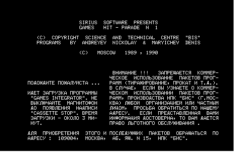
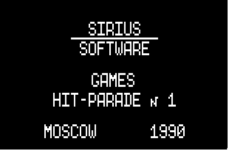

Games Integrator Hit parade 1 - это набор из нескольких игр. Он сделан в виде загружаемой базовой программы (загрузчик), которая помогает загрузить выбранную игроком игру.


Необычное в этом загрузчике то, что он сделан в режиме автостарта. То есть, после загрузки своей первой части, он сам автоматически запускается. В Микроше нет функционала автоматического запуска загруженной программы, однако авторы Интегратора обошли это ограничение. Первая часть загрузчика загружается в область памяти в районе 7XXXh - адресов, где расположена вершина стека. Таким образом, при загрузке с магнитофона происходит перезапись вершины стека, в результате чего после завершения загрузки управление переходит не в Монитор, а по заданному адресу.
Вторая часть загрузчика подгружается после автозапуска первой части. Здесь имеется еще две необычные вещи: во-первых, последующая загрузка идет с включенным экраном. Контроллер дисплея настраивается на более короткий пакет DMA запросов, т. е. процессор "тормозится" на более короткий промежуток времени, но чаще. Таким образом достигается более равномерная скорость работы процессора, и это позволяет отрисовывать картинку во время загрузки. Во-вторых, сам формат записи загружаемых данных совершенно отличается от стандартного: используются фальш-импульсы/фальш-блоки в сигнале и переменный битрейт. Сделано это, по всей видимости, для защиты от копирования.
К этой записи прикреплены звуковые файлы Games Integrator с форума nedopc.org. Так же прикреплен архив с видео и со скриншотами игр.
Существуют так же файлы этого игрового набора на сайте onego.ru, причем в двух вариантах - просто для Микроши, и для ПЭВМ Башкирия (хотя вариант для Башкирии вроде как подходит для Микроши). Однако эти файлы не получилось загрузить ни в эмулятор, ни в настоящую Микрошу.